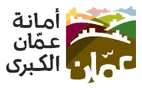
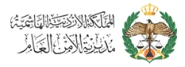

Jordan River Center for Certified Translationمركز نهر الأردن للترجمة المعتمدة
Certified Legal Translation Services for Official Authorities, Ministries, and Embassies in Jordan.ترجمة قانونية معتمدة لدى الجهات الرسمية والوزارات والسفارات في الأردن
Legal Translationالترجمة القانونيةCertified Translationالترجمة المعتمدةNotarized Translation Servicesخدمات الترجمة الموثقة لدى الكاتب العدل
Certified Translation Services in Amman, Jordanخدمات ترجمة معتمدة في عمّان، الأردن
Established in 2017, Jordan River Center for Certified Translation (JRC) is a fully licensed translation company based in Amman, Jordan, operating in accordance with the laws of the Hashemite Kingdom of Jordan. We provide certified translation, interpretation, and comprehensive language services to businesses, government entities, international organizations, and individuals.
A key strength of JRC is our specialization in military, defense, and security interpretation. We provide highly qualified military interpreters for simultaneous and consecutive interpreting, along with integrated language support solutions for military exercises, field operations, and international cooperation programs.
تأسس مركز نهر الأردن للترجمة المعتمدة (JRC) عام 2017، وهو شركة ترجمة مرخصة بالكامل مقرها عمّان، الأردن، وتعمل وفقًا لقوانين المملكة الأردنية الهاشمية.
نقدم خدمات الترجمة التحريرية المعتمدة والترجمة الفورية والحلول اللغوية المتكاملة للشركات والجهات الحكومية والمنظمات الدولية والأفراد.
تُعد الترجمة الفورية العسكرية والدفاعية والأمنية إحدى أبرز نقاط التميز التي ينفرد بها مركز نهر الأردن للترجمة المعتمدة، حيث نوفر مترجمين فوريين عسكريين ذوي خبرة وكفاءة عالية لتقديم خدمات الترجمة الفورية والتتابعية، إلى جانب توفير حلول دعم لغوي متكاملة للتمارين العسكرية، والعمليات الميدانية، وبرامج التعاون الدولي.
Comprehensive Language Solutions to Meet All Your Needsحلول لغوية متكاملة تلبي جميع احتياجاتكم
Certified translation, notarized documents, and interpreters — for individuals, companies, governments, and defense partners.ترجمة معتمدة، ووثائق مصدّقة، ومترجمون فوريون — للأفراد والشركات والجهات الحكومية وشركاء الدفاع.
Translationالترجمة التحريرية
ترجمة قانونية معتمدة | دقة واحترافية | أسعار تنافسية
Legal Translationالترجمة القانونيةCertified Translationالترجمة المعتمدةNotarized Translation Servicesخدمات الترجمة الموثقة لدى الكاتب العدل
Certified translation of government, personal, visa, and immigration documents.الترجمة المعتمدة للوثائق الحكومية والشخصية ووثائق التأشيرات والهجرة.
Sworn and certified translation services for courts, notaries public, and official authorities.خدمات الترجمة المحلفة والمعتمدة للمحاكم وكتاب العدل والجهات الرسمية.
Patent translation services.خدمات ترجمة براءات الاختراع.
Translation of military documents, manuals, training materials, and operational publications.ترجمة الوثائق والكتيبات والمواد التدريبية والمنشورات العملياتية العسكرية.
Interpretation Servicesخدمات الترجمة الفورية
Provision of certified simultaneous and consecutive interpreters.توفير مترجمين فوريين معتمدين لخدمات الترجمة الفورية والتتابعية.
Assignment of qualified interpreters with professional experience and subject matter expertise across various fields.توفير مترجمين فوريين مؤهلين ذوي خبرة مهنية ومعرفة تخصصية في مختلف المجالات.
Interpretation services for conferences, meetings, training programs, workshops, seminars, business events, and official activities.تقديم خدمات الترجمة الفورية للمؤتمرات، والاجتماعات، والبرامج التدريبية، وورش العمل، والندوات، والفعاليات التجارية، والأنشطة الرسمية.
Professional interpretation services for government entities, corporations, legal, technical, medical, educational, international development organizations, non-governmental organizations (NGOs), and military training programs.تقديم خدمات ترجمة فورية احترافية للجهات الحكومية، والشركات، والقطاعات القانونية، والتقنية، والطبية، والتعليمية، ومنظمات التنمية الدولية، والمنظمات غير الحكومية (NGOs)، وبرامج التدريب العسكري.
Specialtyتميُّزنا
Military & Security Interpreting | Simultaneous & Consecutive Interpretingالترجمة العسكرية والأمنية | الترجمة الفورية والتتابعية
Provision of certified simultaneous and consecutive military interpreters.توفير مترجمين فوريين عسكريين معتمدين لتقديم خدمات الترجمة الفورية والتتابعية.
Staffing of simultaneous and consecutive military interpreters with military experience and subject matter expertise.توفير مترجمين فوريين عسكريين مؤهلين يتمتعون بخبرة عسكرية ومعرفة تخصصية في المجالات ذات الصلة.
Rapid deployment of qualified military interpreters.القدرة على توفير ونشر مترجمين فوريين عسكريين مؤهلين بسرعة وفقًا لمتطلبات المهام والمشاريع.
Interpretation services for training programs, military exercises, maneuvers, conferences, workshops, seminars, and operational support activities.تقديم خدمات الترجمة الفورية المتخصصة لدعم البرامج التدريبية، والتمارين والمناورات العسكرية، والمؤتمرات، وورش العمل، والندوات، وأنشطة الدعم العملياتي.
Translating and processing visa and immigration requirementsترجمة وتجهيز متطلبات التأشيرات والهجرة
Translation and preparation of visa documents and applications.ترجمة وتجهيز وثائق وطلبات التأشيرات.
Translation and processing of immigration and family reunification files.ترجمة وتجهيز معاملات الهجرة ولمّ الشمل.
Preparation of U.S. visa lottery applications.تجهيز طلبات اللوتري الأمريكي.
Military Interpretation Servicesخدمات الترجمة الفورية العسكرية
JRC specializes in providing professional interpretation services for military, security, and law enforcement sectors, supported by qualified interpreters with relevant field experience and expertise in Arabic – English, Kurdish – English, Bengali – English, Urdu – English, and other language pairs available upon request.
يختص مركز نهر الأردن للترجمة المعتمدة (JRC) بتقديم خدمات ترجمة فورية احترافية للقطاعات العسكرية والأمنية وإنفاذ القانون، بدعم من مترجمين فوريين مؤهلين ذوي خبرة ميدانية ومعرفة تخصصية، لتوفير خدمات الترجمة بين العربية والإنجليزية، والكردية والإنجليزية، والبنغالية والإنجليزية، والأردية والإنجليزية، وغيرها من أزواج اللغات حسب الطلب.
Language support for individuals, businesses, government entities, and international organizations.دعم لغوي للأفراد والشركات والجهات الحكومية والمنظمات الدولية.
01
Government & Ministriesالجهات الحكومية والوزارات
Official documents, treaties, and MoUs.الوثائق الرسمية والمعاهدات ومذكرات التفاهم.
02
Embassiesالسفارات
Visa, immigration, and residency files.ملفات التأشيرات والهجرة والإقامة.
03
Courts & Legalالمحاكم والقطاع القانوني
Judgments, contracts, and powers of attorney.الأحكام والعقود والوكالات.
04
Military & Defenseالقطاع العسكري والدفاعي
Exercises, manuals, and field operations.التمارين والكتيّبات والعمليات الميدانية.
05
Corporations & Tradeالشركات والتجارة
Registrations, finance, and customs.السجلات والبيانات المالية والجمارك.
06
NGOs & Developmentالمنظمات الدولية وغير الحكومية
Programs, workshops, and field events.البرامج وورش العمل والفعاليات الميدانية.
07
Education & Researchالتعليم والبحث العلمي
Certificates, theses, and studies.الشهادات والرسائل والدراسات.
08
Medical & Technicalالقطاعان الطبي والتقني
Specialized terminology and patents.المصطلحات المتخصصة وبراءات الاختراع.
Our Clientsعملاؤنا
Ministry of Planning & International Cooperationوزارة التخطيط والتعاون الدولي

Greater Amman Municipalityأمانة عمّان الكبرى
ACTED-Jordanأكتد – الأردن
Ministry of Digital Economy and Entrepreneurshipوزارة الاقتصاد الرقمي والريادة

Public Security Directorateمديرية الأمن العام
ATA Program-Jordanبرنامج المساعدة في مكافحة الإرهاب (ATA) – الأردن
Looking for a certified translation office near you?تبحث عن مكتب ترجمة معتمد قريب منك؟